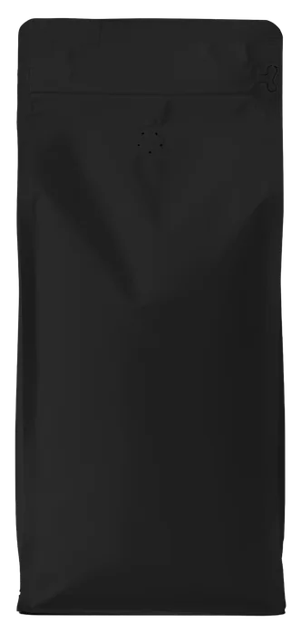

Ethiopia · WashedGuji, above HambelaRoasted at your level
Picked by hand on farms of a hectare or two, fermented for thirty-six hours, dried on raised beds. The kind of lot that tastes like fruit before it tastes like coffee. We take it light and stop forty seconds after first crack, so the bergamot survives.
- Variety
- 74158, local landrace
- Altitude
- 2,050 – 2,200 m
- Process
- Washed, raised-bed dried
- Cupping
- Apricot, bergamot, black tea
SGD 24250 g · light · for filter

First crack 8:40Dropped 9:24 · 205°